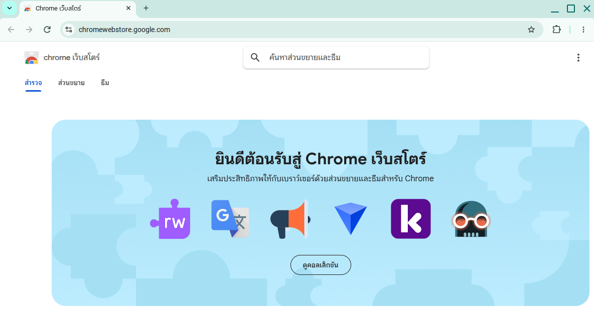
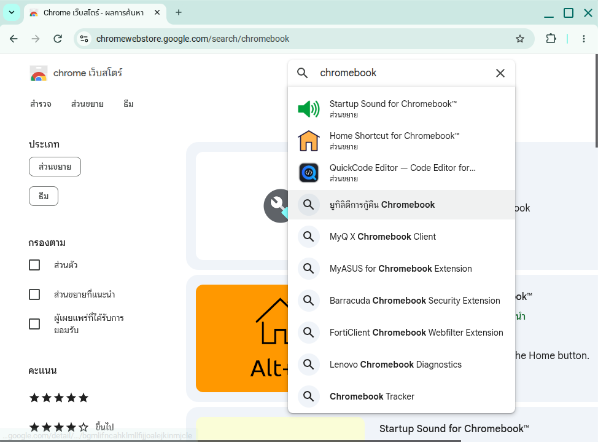
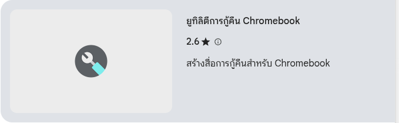
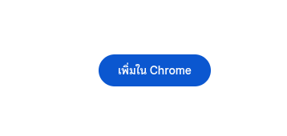
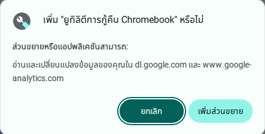
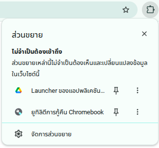
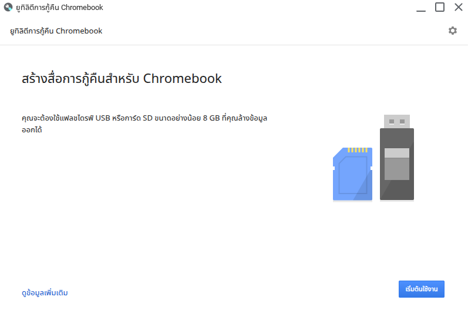
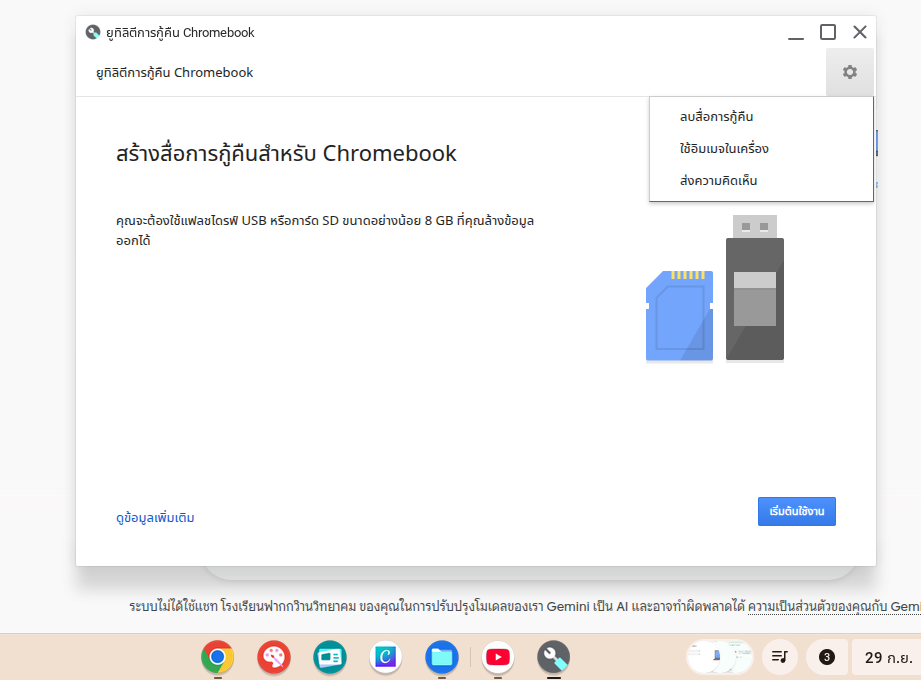

1 ขั้นตอนการติดตั้งแอปส่วนขยาย (Extension)
เปิดเบราว์เซอร์ Chrome แล้วเข้าไปที่ https://chromewebstore.google.com/

พิมพ์คำว่า chromebook ในช่องค้นหาด้านบน

คลิกเลือกที่รายการ "ยูทิลิตี้การกู้คืน Chromebook" (Chromebook Recovery Utility)

กดปุ่มสีฟ้าคำว่า "เพิ่มใน Chrome" (Add to Chrome)

จะมีป๊อบอัพเด้งขึ้นมา ให้กดปุ่ม "เพิ่มส่วนขยาย" (Add extension)

คลิกที่ไอคอนรูป จิ๊กซอว์ 🧩 (ส่วนขยาย) ที่มุมขวาบนของเบราว์เซอร์ แล้วกดเลือก "ยูทิลิตี้การกู้คืน Chromebook"

2 หน้าหลักโปรแกรม (สร้างสื่อการกู้คืน)
หากพบหน้าจอที่เขียนว่า "สร้างสื่อการกู้คืนสำหรับ Chromebook" คือขั้นตอนเตรียมทำ Flash Drive สำหรับติดตั้งหรือกู้คืนระบบปฏิบัติการ ChromeOS

3 เมนูฟันเฟือง ⚙️ มีอะไรบ้าง?
เมื่อกดไอคอนรูปฟันเฟือง ⚙️ มุมขวาบน จะมี 3 เมนูหลักดังนี้:
ล้างข้อมูลและพาร์ทิชันย่อยทั้งหมดใน Flash Drive ให้กลับมาใช้งานปกติ
เลือกไฟล์ระบบ (.bin หรือ .zip) ที่โหลดไว้ในคอมมาทำตัวติดตั้ง
ส่งข้อความแจ้งปัญหาหรือข้อเสนอแนะไปยังทีมงาน Google
